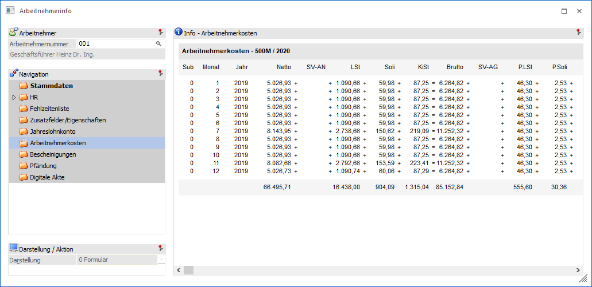

In dem Bereich "Arbeitnehmerkosten" werden die Arbeitnehmerkosten des Arbeitnehmers angezeigt, wobei nur die Monate berücksichtigt werden, für welche es auch Abrechnungen gibt.

Wenn der WinLine LOHN Österreich verwendet wird, so werden auf der Liste folgende Informationen angezeigt:
ü SUB
ü Monat
ü Jahr
ü Netto
ü SV-DN
ü LSt
ü Brutto
ü SV-DG
ü Komm.St.
ü DB
ü DZ
ü U-Bahn
ü MV-Beitrag
ü Zuk.Sich (Zukunftssicherung)
ü Gesamt (Gesamtkosten für den Arbeitnehmer)
Wenn der WinLine LOHN Deutschland verwendet wird, so werden auf der Liste folgende Informationen angezeigt:
ü SUB
ü Monat
ü Jahr
ü Netto
ü SV-AN
ü LSt
ü Soli
ü KiSt
ü Brutto
ü SV-AG
ü P.Lst.
ü P.Soli
ü P.KiSt
ü Umlage
ü Erstatt U1
ü Erstatt U2
ü Gesamt
Unter den einzelnen Werten werden auch die Gesamtsummen dargestellt.